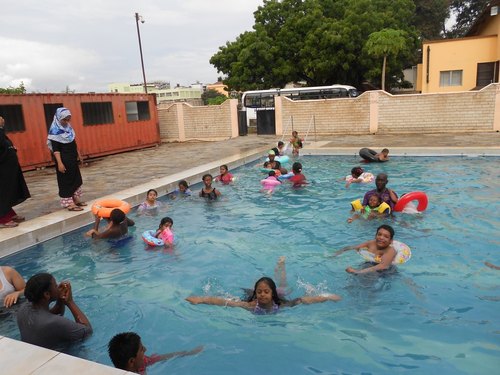
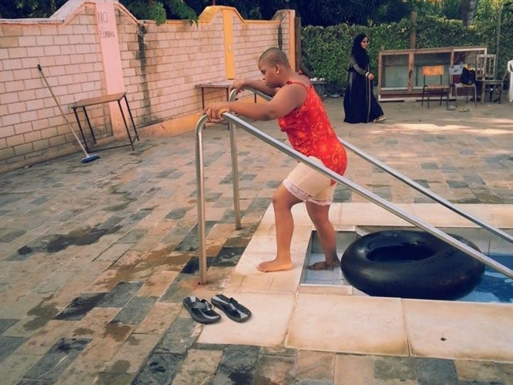
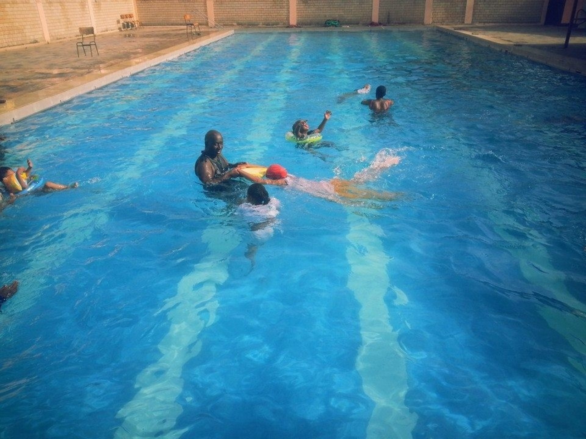

At the Cerebral Palsy Foundation (CPF), we are committed to providing innovative therapies that enhance the lives of children with special needs. Recently, we had the privilege of embarking on an inspiring journey to the Mombasa Women Association, where our children experienced the incredible benefits of swimming therapy in a welcoming and supportive environment.

Swimming therapy holds a special place in our hearts at CPF. For children with cerebral palsy, the buoyancy of water offers a unique opportunity for physical exercise and rehabilitation. In the pool, the weightlessness of water reduces the impact on joints and muscles, making it an ideal environment for children with mobility challenges to explore their abilities. Swimming therapy not only strengthens muscles and improves coordination but also enhances flexibility and range of motion, enabling our children to achieve greater independence in their daily lives.

As we arrived at the Mombasa Women Association, we were greeted by the tranquil surroundings and warm hospitality that would define our day. The sparkling waters of the pool beckoned to us, offering a sanctuary where our children could immerse themselves in the therapeutic embrace of aquatic therapy. Under the guidance of our dedicated team of therapists and volunteers, our children dove into the pool with enthusiasm and determination.

With each stroke and kick, they embraced the freedom and weightlessness of the water, revelling in the joy of movement and discovery. From strengthening muscles to improving coordination, swimming therapy provided our children with a holistic approach to rehabilitation that addressed their physical, emotional, and sensory needs.
The success of our swimming therapy session was made possible through the generous support of the Mombasa Women Association and the unwavering dedication of our community partners. Together, we created an inclusive and empowering environment where children of all abilities could thrive and flourish. As we reflect on our day at the pool, we are filled with gratitude for the transformative impact of swimming therapy and the boundless possibilities it holds for the future.